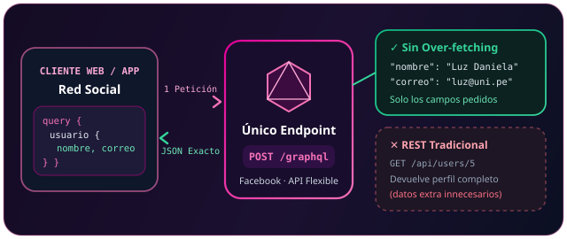
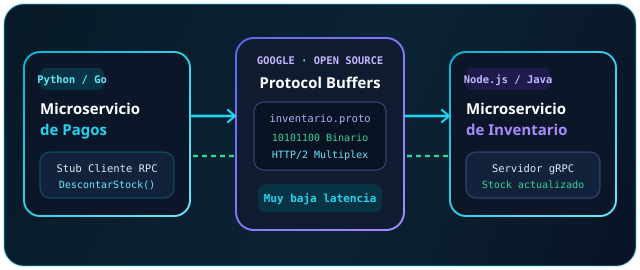
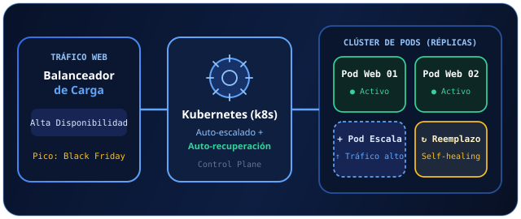
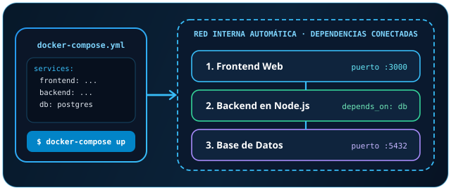
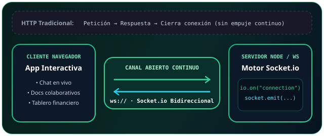

Investigación Académica
Tecnologías modernas de consulta de APIs, comunicación de microservicios, orquestación de contenedores y tiempo real.
GraphQL: Datos exactos en un único endpoint
Creado por Facebook, es un lenguaje de consultas para APIs y una moderna alternativa a REST. Utiliza un único endpoint flexible donde el cliente solicita exactamente los datos que necesita.
Único Endpoint Flexible
Toda consulta viaja a una sola ruta (ej. /graphql), adaptándose a cualquier vista del cliente sin crear decenas de rutas fijas.
Adiós al Over-fetching
Evita la transferencia excesiva de información al descartar campos que la interfaz no va a mostrar.
Pedir exclusivamente el nombre y correo de un usuario en una sola petición a una red social, en lugar de recibir el perfil completo predefinido por el servidor.

Selecciona los campos de tu consulta
query {
usuario(id: "05") {
nombre
correo
}
}{
"usuario": {
"nombre": "Luz Daniela",
"correo": "daniela@redsocial.pe"
}
}gRPC: Alto rendimiento entre servicios
Framework de Llamada a Procedimiento Remoto (RPC) de código abierto y alto rendimiento desarrollado por Google. Funciona en cualquier entorno conectando servicios de manera sumamente eficiente.
Contratos con Protocol Buffers
Emplea archivos de definición de interfaz (.proto) para generar automáticamente la API y serializar datos en formato binario ultracompacto.
Multi-entorno y Políglota
Permite invocar funciones remotas como si fueran locales entre sistemas escritos en distintos lenguajes de programación.
Comunicar internamente múltiples microservicios backend (ej. pagos e inventario) programados en distintos lenguajes con muy baja latencia.

Comunicación Pagos ↔ Inventario
syntax = "proto3";
service Inventario {
rpc DescontarStock (OrdenPago)
returns (Confirmacion);
}
Listo: contrato .proto compilado. Pulsa Invocar RPC para medir latencia.
Kubernetes (k8s): Orquestación y auto-escalado
Plataforma para la orquestación de contenedores que automatiza el despliegue, escalado y gestión de aplicaciones modernas en producción.
Alta Disponibilidad y Balanceo Integrado
Distribuye inteligentemente las solicitudes entrantes entre múltiples réplicas activas para evitar cuellos de botella.
Auto-recuperación (Self-healing)
Supervisa continuamente la salud del clúster y reemplaza automáticamente instancias o pods que fallan.
Configurar un sistema para que incremente dinámicamente las réplicas de un servidor web durante un pico de tráfico masivo (como un Black Friday) y las reduzca al terminar.

Tráfico Estándar · 2 Réplicas Activas
Docker Compose: Múltiples contenedores en un comando
Herramienta diseñada para definir y ejecutar aplicaciones en Docker que requieren múltiples contenedores coordinados entre sí.
Archivo Único YAML (docker-compose.yml)
Centraliza servicios, puertos, variables y orden de arranque mediante directivas de dependencia como depends_on.
Red Interna Automática
Crea una red virtual aislada donde los contenedores se descubren y comunican directamente usando su nombre de servicio.
Levantar un frontend web, un backend en Node.js y una base de datos de manera simultánea e interconectada ejecutando un solo comando (docker-compose up).

Orquestación Local de 3 Servicios
services:
db:
image: postgres:16
backend:
build: ./api-node
depends_on: [db]
frontend:
build: ./web
depends_on: [backend]- db (Base de Datos) Detenido
- backend (Node.js) Detenido
- frontend (Web UI) Detenido
WebSockets / Socket.io: Tiempo real bidireccional
Protocolo estándar (WebSockets) y biblioteca de JavaScript (Socket.io) que habilitan la comunicación bidireccional y continua entre el cliente y el servidor en tiempo real.
Supera el Modelo Petición-Respuesta de HTTP
Mantiene un canal TCP persistente abierto para que el servidor envíe eventos instantáneos sin esperar nuevas consultas del navegador.
Socket.io Basado en Eventos
Facilita salas (rooms), reconexión automática y emisión de eventos en vivo con socket.emit() y socket.on().
Aplicaciones de chat en vivo, documentos colaborativos simultáneos o tableros financieros con actualización de precios en tiempo real.

Casos en Tiempo Real
Referencias Bibliográficas
-
01 · GraphQL
GraphQL Foundation. (2025). Introduction to GraphQL: Query language for your API. Documentación oficial de GraphQL.
https://graphql.org/learn/ -
02 · gRPC & Protobuf
gRPC Authors & Google. (2025). Introduction to gRPC and Protocol Buffers. gRPC Official Documentation.
https://grpc.io/docs/what-is-grpc/introduction/ -
03 · Kubernetes (k8s)
Cloud Native Computing Foundation [CNCF]. (2025). Overview of Kubernetes: Container orchestration, scaling, and self-healing. Kubernetes Documentation.
https://kubernetes.io/es/docs/concepts/overview/ -
04 · Docker Compose
Docker Inc. (2025). Docker Compose overview: Define and run multi-container applications. Docker Docs.
https://docs.docker.com/compose/ -
05 · WebSockets (RFC 6455)
Fette, I., & Melnikov, A. (2011). The WebSocket Protocol (RFC 6455). Internet Engineering Task Force (IETF) / MDN Web Docs.
https://datatracker.ietf.org/doc/html/rfc6455 -
06 · Socket.io
Socket.IO Maintainers. (2025). How Socket.IO works: Bidirectional and low-latency communication for every platform. Socket.IO Documentation.
https://socket.io/docs/v4/